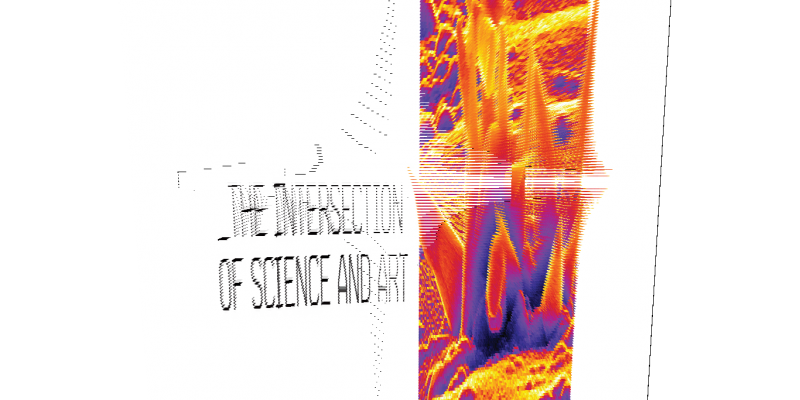

2018
Traditionally, the artist and the scientist are representing two different worlds. While the scientist should always be objective, using approved methods and available technological tools to capture and analyze reality, the artist has to remain subjective in order to deconstruct the prevalent methods or to invent new. Today, we observe the convergence and hybridization of these two roles, starting from the first photographic techniques to the digital computers, developments that led to the birth of digital arts and determined the progress of science in the last two centuries.Collaborator: Nikos Voyiatzis, Media Designer/ Artist for Onassis cultural center
